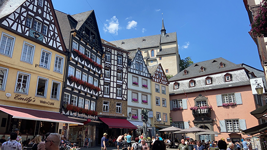
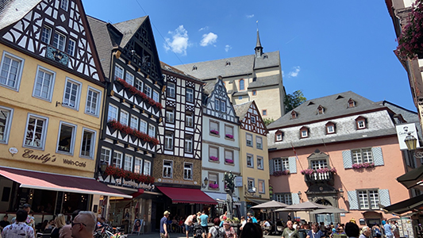

Cochem, Duitsland

Afgelopen zomer ben ik in Cochem geweest, dit is een plaatsje aan de rivier de Moezel. Wij waren in het dorpje Klotten verbleven wat ongeveer 8 minuten rijden is vanaf Cochem. Daar sliepen we in een appartement van een aardige vrouw. Tijdens dit verblijf hebben wij een aantal excursies gedaan, je kan daar veel wandelen en door de bergen lopen. Als je dat gaat doen vergeet je wanderschoenen niet. Je kan er lekker tot rust komen onder het genot van een heerlijk wijntje. Als je Cochem zelf ingaat kan je lekker schoppen, dit kan je dan bereiken met de fiets of de auto. De dorpen liggen wel ver uit elkaar om alles te fietsen, dus houd daar rekening mee als je besluit om op een fiets vakantie te gaan.


 
